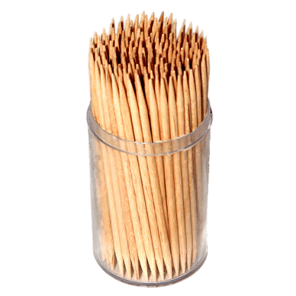

Todo mundo já ficou com restos de alimentos presos entre os dentes, e essa é uma sensação para lá de desconfortável. Nessas horas, é possível que você queira resolver de maneira prática, e muitas vezes a primeira solução que vem à mente é o palito de dentes. Mas você sabia que essa não é a forma mais saudável de lidar com esse problema? Muito pelo contrário, já que o uso regular do palito de dentes pode resultar em diversos prejuízos à saúde da sua boca. Ao longo deste texto você poderá saber um pouco mais sobre por que o uso do palito de madeira não é recomendado para remover restos de alimentos entre os dentes.
